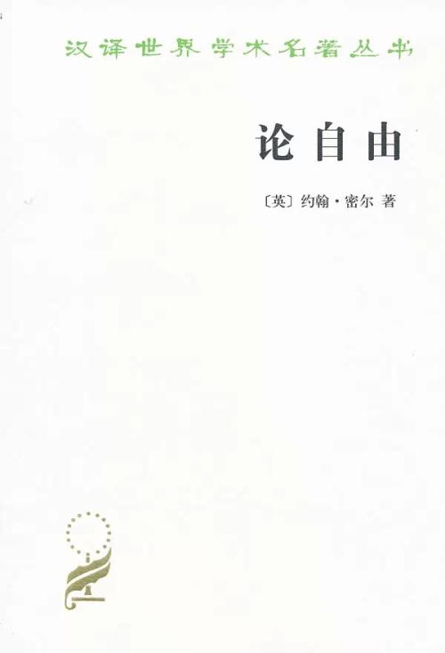

注：【】部分为笔者心得，非原文摘抄。
- 若是哪个国度里有着一个占优势的阶级，那么一国的道德必是大部分发自那个阶级的阶级利益和阶级优越感。
- 人类之所以有理有权可以各别地或者集体地对其中任何分子的行动自由进行干涉，唯一的目的只是自我防卫。
- 任何人的行为，只有涉及他人的那部分才须对社会负责。在仅只涉及本人的那部分，他的独立性在权力上则是绝对的。
- 人类自由的适当领域包括：第一，意识的内向境地要求着最广义的良心的自由；要求着思想和感想的自由；要求着在不论是实践的或思考的、是科学的、道德的或神学的等等一切题目上的意见和情操的绝对自由。第二，要求趣味和志趣的自由；要求有自由订制自己的生活计划以顺应自己的性格；要求有自由照自己所喜欢的去做，当然也不规避会随来的后果。这种自由，只要我们所作所为无害于我们的同胞，就不应遭到他们的妨碍，即使他们认为我们的行为是愚蠢、背谬、或错误的。第三，随着各个人的这种自由而来的，在同样的限度之内，还有个人之间相互联合的自由；人们有自由为着任何无害于他人的目的而彼此联合。
- 出版自由作为反对腐败政府或暴虐政府的保证之一，必须有所保护。
- 凡压默讨论，都是假定了不可能错误性。
- 每人都深知自己是可能错误的，可是很少有人想着有必要对自己的可能错误性采取什么预防办法，也很少人容有这样的假定，说他们所感觉十分确定的任何意见可能正是他们所承认自己易犯的错误之一例。
- 所谓世界，就每个个人来说，是指世界中他所接触到的一部分，如他的党、他的派、他的教会、他的社会阶级；至于若有一个人以为所谓世界是广泛到指着他自己的国度或者他自己的时代，那么，比较起来，他就可称为几近自由主义的和心胸广大的了。
- 假如我们因为我们的意见可能会错就永不本着自己的意见去行动，那么我们势必置自己的一切利害于不顾，也弃自己的一切义务而不尽。
- 若谓真理只因其为真理便具有什么固有的力量，能够抵抗错误，能够面临监狱和炮烙而挺占优胜，这乃是一种空洞无根的情操。须知人们之热心于真理并不胜于他们之往往热心于错误。
- 一个意见只要是真确的，尽管可以一次再次或甚至多次被压熄下去，但在悠悠岁月的进程中一般总会不断有人把它重新发现出来，直到某一次的重拾恰值情况有利，幸得逃过迫害，直至它头角崭露，能够抵住随后再试图压制它的一切努力。
- 由于禁止一切不归结于正统结论的探讨，败坏最甚的还不是异端者的心灵。最大的损害乃在那些并非异端者的人，由于害怕异端之称，他们的整个精神发展被限制了，他们的理性弄得痀挛了。
- 作为一个思想家，其第一个义务就是随其智力所之而不论它会导致什么结论，谁不认识到这一点谁就不能成为一个伟大的思想家。
- 只要所谓争论是避开了那些大而重要足以燃气热情的话题，人民的心灵就永不会从基础上被搅动起来。
- 没有坚定信念作基础的信条一遇辩论就会退避三舍。
- 在人类心灵方面，片面性永远是规律，而多面性则是例外。
- 即使举世是居于正确方面，那些少数异议者也总是可能有其值得一听的为自己辩说的东西，而假如他缄口不言，真理就会有所损失的。
- 对于每一个人，也不论他抱持什么意见，只要他能够冷静地去看也能够诚实地来说他的反对者以及他们的意见真正是什么，既不夸大足以损害他们的信用的东西，也不掩藏足以为他们辩护或者想来足以为他们辩护的东西，那就要给以应得的尊敬。
- 人类应当有自由去形成意见并且无保留地发表意见。
- 意见的统一，除非是对立诸意见经过最充分和最自由的较量的结果，是无可取的。
- 凡在不以本人自己的性格却以他人的传统或习俗为行为的准则的地方那里就缺少着人类幸福的主要因素之一，而所缺少的这个因素同时也是个人进步和社会进步的一个颇为主要的因素。
- 凡是听凭世界或者他自己所属的一部分世界代替自己选定生活方案的人，除需要一个人猿般的模仿力外便不需要任何其它能力。
- 对于习俗，要作有头脑的遵循，或者甚至偶作有头脑的分歧，这比盲目的和单纯机械般的附从较好一些。
- 精力当然可以被导向坏的用途；但是一个富有精力的人性也永比一个无精神无感觉的人性可以做出较多的好事。
- 人类要成为思考中高贵而美丽的对象，不能靠着把自身中一切个人性的东西都磨成一律，而要靠在他人权利和利益所许的限度之内把它培养起来和发扬出来。
- 凡是压毁人的个性的都是专制，不论管它叫什么名字，也不论它自称是执行上帝的意志或者自称是执行人们的命令。
- 人们都要记住，没有一件事不是有某一人第一个做出来的；人们还要记住，现在的一切美好事物都是首创性所结的果实；既然如此，那么就请大家都已足够的谦虚来相信，这里还剩有一些事情要由首创性去完成；还请大家也以足够的谦虚来确告自己，自己愈少意识到缺乏首创性就愈多需要首创性。
- 人类中的一般中材不仅在智力上是平庸的，就是在意向方面也很平庸：他们没有足够强烈的嗜好或愿望能使他们向往于做些什么不平常的事，因而他们也不能理解有那种嗜好或愿望的人，径把那种人划归野性难驯和不知节制的一类，而那又是他们素所鄙视的。
- 习俗的专制在任何地方对于人类的前进都是一个持久的障碍，因为它和那种企图达到某种优于习俗的事物的趋向是处于不断冲突之中的。
- 凡对侵蚀要作任何抵抗，只有在较早阶段才能成功。
- 人类在有过一段时间不习惯于看到歧异以后，很快就会变成连想也不能想到歧异了。
- 不论是一个人也好，或者是任何多数人也好，都无权对另一个成年人说，为了他自己的益处他不可用其一生去做某件他所选定要用其一生去做的事。对于一个人的福祉，本人是关切最深的人。一个人所以纯属只关己身的行为毁伤了自己而失去对公众尽其本分上的某种确定的义务的能力，他就算犯了一个社会性的罪行。
- 个人的行动只要不涉及自身以外什么人的利害，个人就不必向社会负责交代。他人若为着自己的好处而认为有必要时，可以对他忠告、指教、劝说以至远而避之，这些就是社会要对他的行为表示不喜或非难时所仅能采取的正当步骤。
- 关于对他人利益有害的行动，个人则应当负责交代，并且还应当承受或是社会的或是法律的惩罚，假如社会的意见认为需要用这种或那种惩罚来保护它自己的话。
- 我们绝不可假定，由于对他人利益的伤害或者可能伤害这一点单独就能构成社会干涉的正当理由，所以没有什么时候不能把这种干涉解释称正当。
- 要做到价廉而物美，最有效的办法还是让生产者和销售者都完全自由，而以购买者可以随意到处选购的同等自由作为对他们的唯一制约。这就是所谓自由贸易的教义。
- 政府的工作趋于到处一样化，相反，个人和自愿联合组织则会做出各种不同的实验，得出无穷多样的经验。政府所能做的有用之事，只是使自己成为一个集中保管者，积极地把多种试验所得出的经验分发和传播出去。它的任务在于使得每一个实验者不是只许自己实验不容别人实验，而是都能够从另一些实验者那里获得教益。
- 不必要地增加政府的权力，会有很大的祸患。
- 在文明比较先进和反抗精神较多的国度里，一般公众既习惯于指望国家替他们代办一切，或者至少习惯于若不问准国家让做什么以至怎样做法便什么为他们自己的事情也不去做，他们自然就要认定凡有临到他们身上的灾祸一概应由国家负责，而一到灾祸超过他们忍耐限度的时候，他们就起来反对政府而形成所谓革命。
- 要做到符合于效率原则的最大限度的权力分散；但也要尽可能做到最大限度的情报集中，还要尽最大的可能把情报由中枢散播出去。
- 一切政府的活动，只要不是妨碍而是帮助和鼓舞个人的努力与发展，那是不厌其多的。
- 国家的价值，从长远看来，归根结底还在组成它的全体个人的价值。
- 一个国家若只图在管理技巧方面或者在事务细节实践上所表现的类似的东西方面稍稍较好一些，而竟把全体个人智力的扩展和提高这一基本利益推迟下来；一个国家若只为——即使是为着有益的目的——使人们成为它手中较易制驭的工具而阻碍他们的发展，它终将看到，小的人不能真正做出大的事；它还将看到，它不惜牺牲一切而求得的机器的完善，由于它为求机器较易使用而宁愿撤去了机器的基本动力，结果将使它一无所用。